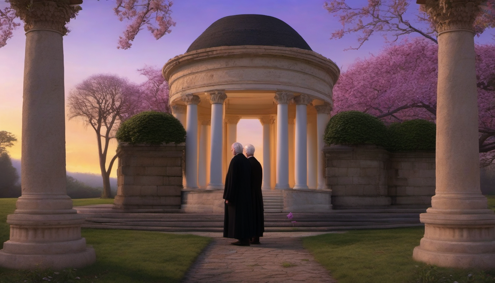
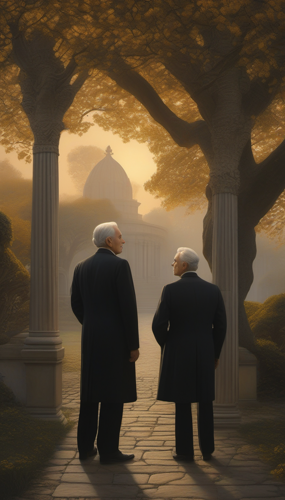
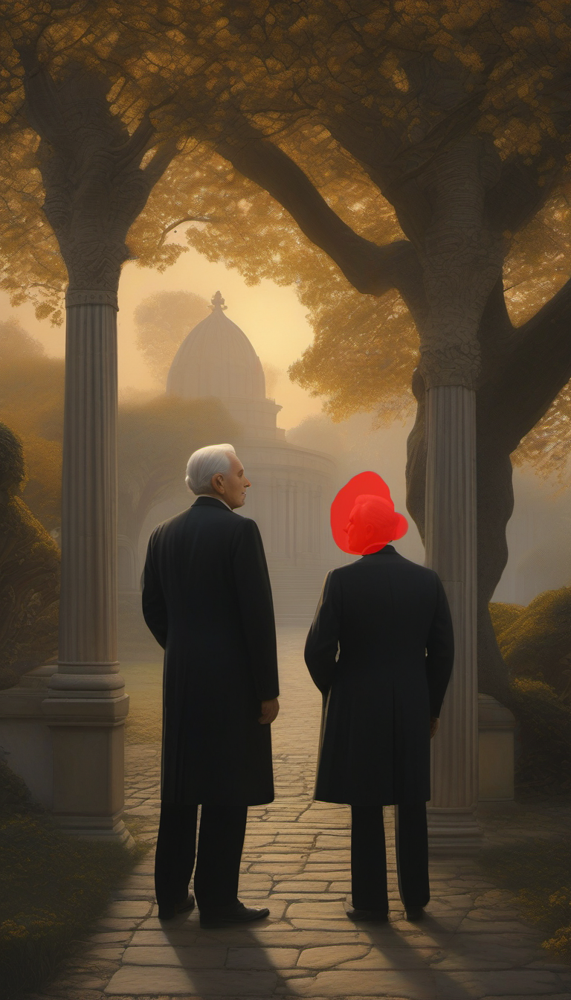
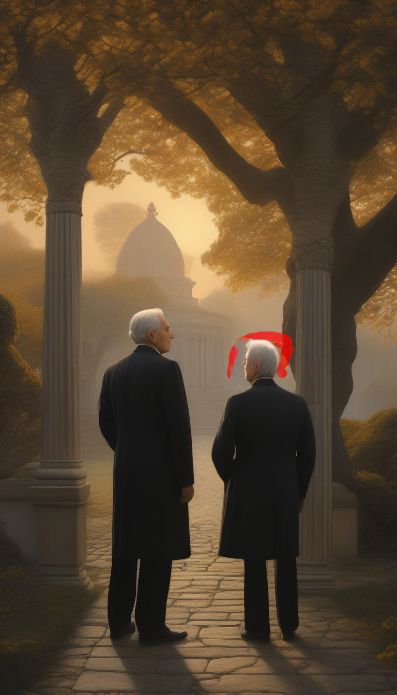

Twilight Fiction
Original stories and creative explorations
Andrew
An original short story by Francisco Martínez Carreño.

The Creative Process
Andrew is an original work of fiction. Its visual interpretation explores identity, resemblance, and the unexpected encounter between two seemingly identical figures.
Visual Development
The first visual experiments established the atmosphere of Andrew: an autumn garden, a mausoleum, and warm evening light. However, the two characters differed in height and appearance, contradicting an essential element of the original story.
First Rejected Illustration — Character Resemblance

Although the atmosphere and composition were satisfactory, the illustration was rejected because the two characters did not resemble each other closely enough. This led to further experimentation with prompts and image editing.
Second Experiment — Inpainting Challenges
To improve the resemblance between the two characters, I experimented with localized image editing using ComfyUI. The objective was to modify one character while preserving the surrounding garden, mausoleum, and evening light.

Additional Inpainting Experiments
These intermediate experiments show the difficulties encountered when attempting to modify one character without changing the surrounding composition. The red areas illustrate the masking problems observed during the editing process. Both results were rejected.

The experiment did not produce the intended result. The editing process introduced unwanted visual artifacts and failed to achieve the necessary resemblance between the characters. I therefore rejected this result and continued exploring alternative approaches.
Final Illustration — ComfyUI_01338_.png
Technical details: Digital illustration generated locally using ComfyUI and Stable Diffusion XL (SDXL). The creative process involved text-to-image generation, prompt refinement, inpainting experiments, human evaluation, and final artistic selection.
The final image was selected for its balance between atmosphere, narrative meaning, and visual coherence. Although the characters are not perfectly identical, the composition communicates the mysterious encounter at the heart of Andrew.
The story was written independently of AI. ComfyUI was used as a visual production tool, while the artistic objectives, evaluation of results, rejection of unsuccessful experiments, and final selection remained human decisions.
About the Author
Francisco Martínez Carreño is a Spanish writer and author of original short fiction. His literary work explores imagination, mystery, human relationships, identity, and the unexpected. He has written more than six hundred short stories, many of which are available in both English and Spanish through his literary blog, Twilight's Flash Fiction. His stories frequently combine everyday situations with fantastic, supernatural, or speculative elements. He is also the author of The Dream of Time, a bilingual collection of short stories. In addition to writing, he explores digital illustration as a means of interpreting literary narratives. His creative approach begins with the written story, while visual tools are used to investigate atmosphere, composition, and narrative meaning. He considers artistic judgment, experimentation, and critical selection essential parts of the creative process.
Explore more original short stories by the author: Twilight's Flash Fiction — Original Short Stories .
Contact: contact@twilightfiction.art